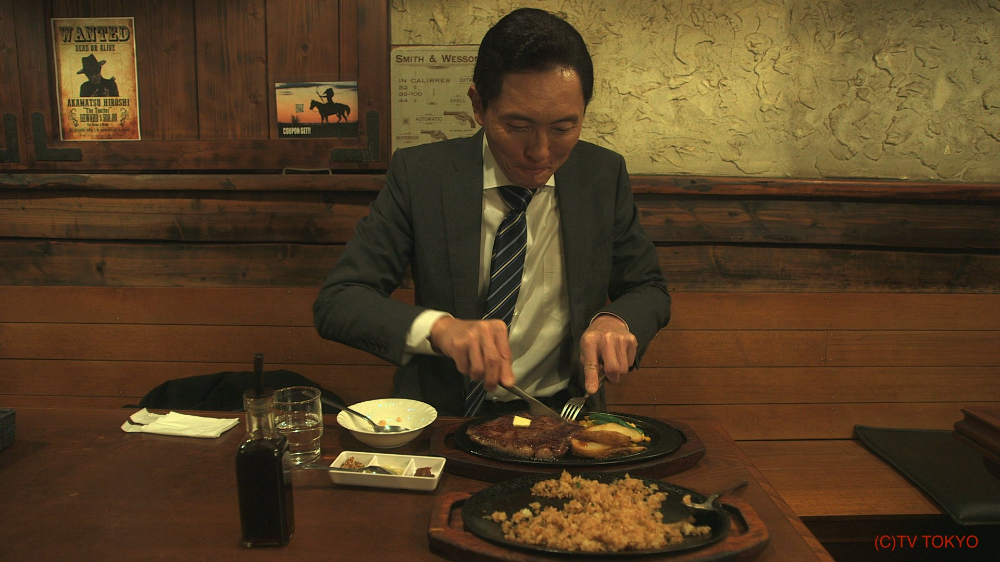

Made by Angelo
The term salaryman (サラリーマン, sararīman) refers to any salaried worker.
In Japanese popular culture, this is embodied by a white-collar worker who shows overriding
loyalty and commitment to the corporation where he works.
Salaryman are expected to work long hours, to put in additional overtime, to participate in
after-work leisure activities such as drinking, singing karaoke and visiting hostess bars with
colleagues, and to value work over all else. The salaryman typically enters a company after graduating
from college and stays with that corporation for the duration of his career.